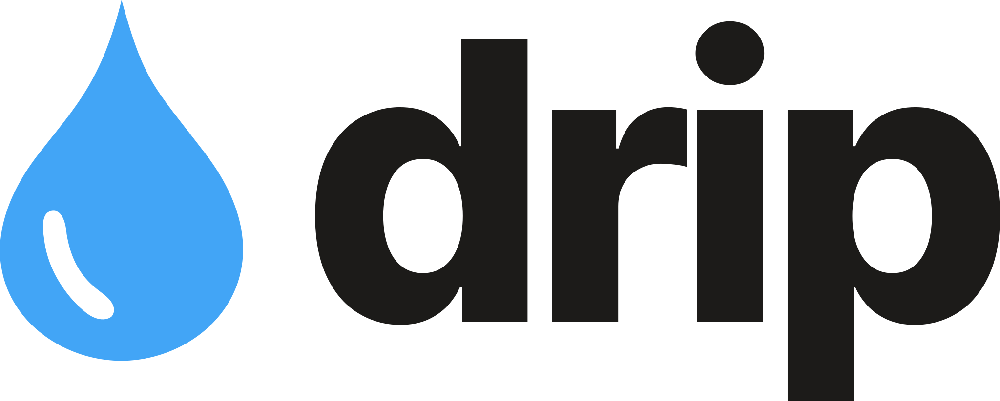
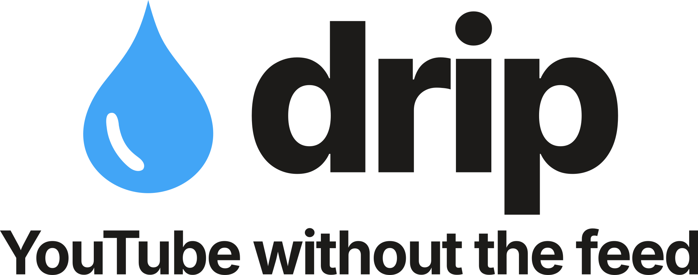

<!doctype html>
<html lang="en">
<head>
<meta charset="utf-8">
<title>drip store screenshots, v5</title>
<link rel="stylesheet" href="https://fonts.googleapis.com/css2?family=Inter:wght@500;800&display=swap">
<style>
  /* The store set of 2026-11-23. One 1280x800 screenshot per URL, frames-v5.html?shot=1 to 5, and the 440x280 tile at
     ?tile=1. The words are on the left in the logo's Inter, and one piece of drip sits in a white panel on the right,
     on a pale blue. Jesse picked the layout (A of round 1) and the color (F of round 2).
     pieces.js takes the pictures of drip, and capture.sh v5 shoots these frames into store/images-v5/. */
  :root { --mist: #e5f1fc; --ink: #1c1b19; --sub: #4a5968; --water: rgb(74, 150, 200); --shade: 20, 50, 90; }
  html, body { margin: 0; background: var(--mist); }
  h1, p { margin: 0; }
  img { display: block; }

  .frame { position: relative; width: 1280px; height: 800px; overflow: hidden; background: var(--mist); color: var(--ink); font-family: Inter, Arial, sans-serif; }
  .words { position: absolute; left: 88px; top: 0; bottom: 0; width: 470px; display: flex; flex-direction: column; justify-content: center; }
  .mark { height: 34px; align-self: flex-start; margin-bottom: 40px; }
  h1 { font-size: 70px; font-weight: 800; letter-spacing: -0.035em; line-height: 1.02; white-space: pre-line; }
  p { margin-top: 22px; font-size: 27px; font-weight: 500; letter-spacing: -0.01em; line-height: 1.3; color: var(--sub); }
  .stage { position: absolute; left: 560px; right: 64px; top: 0; bottom: 0; display: grid; place-items: center; }
  .panel { box-sizing: border-box; background: #fff; border-radius: 36px; box-shadow: 0 40px 70px -30px rgba(var(--shade), 0.35), 0 2px 8px rgba(var(--shade), 0.08); }
  /* The lock is a panel already, so it gets no white around it. Its picture has the sample video outside its round
     corners. The radius here is a little over the picture's own (16.5px, drawn 1.6 times larger), so none shows. */
  .panel.is-bare { border-radius: 27px; overflow: hidden; }

  .tile { position: relative; width: 440px; height: 280px; overflow: hidden; box-sizing: border-box; display: flex; align-items: center; justify-content: center; padding-bottom: 18px; background: var(--mist); }
  .tile svg { position: absolute; left: 0; bottom: 0; }
  .tile img { width: 324px; }
</style>
</head>
<body>
<script>
  // @ts-check
  /**
   * The five screenshots. h is the headline, with its line break. p is the line under it. piece is the picture from
   * store/art/pieces/, w the width it's drawn at, and pad the white around it (0 for the lock, a panel of its own).
   * @type {Record<string, {h: string, p?: string, piece: string, w: number, pad: number}>}
   */
  const SHOTS = {
    1: { h: 'One video\nat a time.', p: 'In place of YouTube\'s home feed.', piece: 'card', w: 540, pad: 30 },
    2: { h: 'Set a\ndaily limit.', p: 'Watch time comes in drops.', piece: 'limit', w: 500, pad: 48 },
    3: { h: 'Time\'s up.', p: 'The video pauses.', piece: 'lock', w: 610, pad: 0 },
    4: { h: 'As strict\nas you like.', p: 'Hide the feed, or add limits too.', piece: 'modes', w: 510, pad: 40 },
    5: { h: 'Your week\nin minutes.', piece: 'week', w: 520, pad: 40 },
  };

  const q = new URLSearchParams(location.search);
  const s = SHOTS[q.get('shot') || '1'] || SHOTS[1];
  const frame = `<div class="frame">
    <div class="words"><h1>${s.h}</h1>${s.p ? `<p>${s.p}</p>` : ''}</div>
    <div class="stage"><div class="panel${s.pad ? '' : ' is-bare'}" style="padding:${s.pad}px"></div></div>
  </div>`;
  // The tile is the logo over the same strip of water as the tiles in frames-v2.html.
  const tile = `<div class="tile">
    <svg width="440" height="30" viewBox="0 0 440 30" preserveAspectRatio="none"><path d="M0 14C70 5 150 5 220 12S370 22 440 13V30H0Z" fill="rgb(74, 150, 200)"/></svg>
    
  </div>`;
  document.body.innerHTML = q.has('tile') ? tile : frame;
</script>
</body>
</html>
